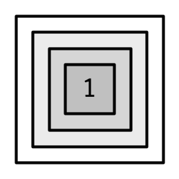

3 Vectors
3.1 Introduction
This chapter discusses the most important family of data types in base R: vectors10. While youve probably already used many (if not all) of the different types of vectors, you may not have thought deeply about how theyre interrelated. In this chapter, I wont cover individual vectors types in too much detail, but I will show you how all the types fit together as a whole. If you need more details, you can find them in Rs documentation.
Vectors come in two flavours: atomic vectors and lists11. They differ in terms of their elements types: for atomic vectors, all elements must have the same type; for lists, elements can have different types. While not a vector, NULL is closely related to vectors and often serves the role of a generic zero length vector. This diagram, which well be expanding on throughout this chapter, illustrates the basic relationships:

Every vector can also have attributes, which you can think of as a named list of arbitrary metadata. Two attributes are particularly important. The dimension attribute turns vectors into matrices and arrays and the class attribute powers the S3 object system. While youll learn how to use S3 in Chapter 13, here youll learn about some of the most important S3 vectors: factors, date and times, data frames, and tibbles. And while 2D structures like matrices and data frames are not necessarily what come to mind when you think of vectors, youll also learn why R considers them to be vectors.
Quiz
Take this short quiz to determine if you need to read this chapter. If the answers quickly come to mind, you can comfortably skip this chapter. You can check your answers in Section 3.8.
What are the four common types of atomic vectors? What are the two rare types?
What are attributes? How do you get them and set them?
How is a list different from an atomic vector? How is a matrix different from a data frame?
Can you have a list that is a matrix? Can a data frame have a column that is a matrix?
How do tibbles behave differently from data frames?
Outline
Section 3.2 introduces you to the atomic vectors: logical, integer, double, and character. These are Rs simplest data structures.
Section 3.3 takes a small detour to discuss attributes, Rs flexible metadata specification. The most important attributes are names, dimensions, and class.
Section 3.4 discusses the important vector types that are built by combining atomic vectors with special attributes. These include factors, dates, date-times, and durations.
Section 3.5 dives into lists. Lists are very similar to atomic vectors, but have one key difference: an element of a list can be any data type, including another list. This makes them suitable for representing hierarchical data.
Section 3.6 teaches you about data frames and tibbles, which are used to represent rectangular data. They combine the behaviour of lists and matrices to make a structure ideally suited for the needs of statistical data.
3.2 Atomic vectors
There are four primary types of atomic vectors: logical, integer, double, and character (which contains strings). Collectively integer and double vectors are known as numeric vectors12. There are two rare types: complex and raw. I wont discuss them further because complex numbers are rarely needed in statistics, and raw vectors are a special type thats only needed when handling binary data.

3.2.1 Scalars
Each of the four primary types has a special syntax to create an individual value, AKA a scalar13:
Logicals can be written in full (
TRUEorFALSE), or abbreviated (TorF).Doubles can be specified in decimal (
0.1234), scientific (1.23e4), or hexadecimal (0xcafe) form. There are three special values unique to doubles:Inf,-Inf, andNaN(not a number). These are special values defined by the floating point standard.Integers are written similarly to doubles but must be followed by
L14 (1234L,1e4L, or0xcafeL), and can not contain fractional values.Strings are surrounded by
"("hi") or'('bye'). Special characters are escaped with\; see?Quotesfor full details.
3.2.2 Making longer vectors with c()
To create longer vectors from shorter ones, use c(), short for combine:
lgl_var <- c(TRUE, FALSE)
int_var <- c(1L, 6L, 10L)
dbl_var <- c(1, 2.5, 4.5)
chr_var <- c("these are", "some strings")When the inputs are atomic vectors, c() always creates another atomic vector; i.e.it flattens:
In diagrams, Ill depict vectors as connected rectangles, so the above code could be drawn as follows:

You can determine the type of a vector with typeof()15 and its length with length().
3.2.3 Missing values
R represents missing, or unknown values, with special sentinel value: NA (short for not applicable). Missing values tend to be infectious: most computations involving a missing value will return another missing value.
There are only a few exceptions to this rule. These occur when some identity holds for all possible inputs:
Propagation of missingness leads to a common mistake when determining which values in a vector are missing:
This result is correct (if a little surprising) because theres no reason to believe that one missing value has the same value as another. Instead, use is.na() to test for the presence of missingness:
NB: Technically there are four missing values, one for each of the atomic types: NA (logical), NA_integer_ (integer), NA_real_ (double), and NA_character_ (character). This distinction is usually unimportant because NA will be automatically coerced to the correct type when needed.
3.2.4 Testing and coercion
Generally, you can test if a vector is of a given type with an is.*() function, but these functions need to be used with care. is.logical(), is.integer(), is.double(), and is.character() do what you might expect: they test if a vector is a character, double, integer, or logical. Avoid is.vector(), is.atomic(), and is.numeric(): they dont test if you have a vector, atomic vector, or numeric vector; youll need to carefully read the documentation to figure out what they actually do.
For atomic vectors, type is a property of the entire vector: all elements must be the same type. When you attempt to combine different types they will be coerced in a fixed order: character double integer logical. For example, combining a character and an integer yields a character:
Coercion often happens automatically. Most mathematical functions (+, log, abs, etc.) will coerce to numeric. This coercion is particularly useful for logical vectors because TRUE becomes 1 and FALSE becomes 0.
x <- c(FALSE, FALSE, TRUE)
as.numeric(x)
#> [1] 0 0 1
# Total number of TRUEs
sum(x)
#> [1] 1
# Proportion that are TRUE
mean(x)
#> [1] 0.333Generally, you can deliberately coerce by using an as.*() function, like as.logical(), as.integer(), as.double(), or as.character(). Failed coercion of strings generates a warning and a missing value:
3.2.5 Exercises
How do you create raw and complex scalars? (See
?rawand?complex.)Test your knowledge of the vector coercion rules by predicting the output of the following uses of
c():Why is
1 == "1"true? Why is-1 < FALSEtrue? Why is"one" < 2false?Why is the default missing value,
NA, a logical vector? Whats special about logical vectors? (Hint: think aboutc(FALSE, NA_character_).)Precisely what do
is.atomic(),is.numeric(), andis.vector()test for?
3.3 Attributes
You might have noticed that the set of atomic vectors does not include a number of important data structures like matrices, arrays, factors, or date-times. These types are built on top of atomic vectors by adding attributes. In this section, youll learn the basics of attributes, and how the dim attribute makes matrices and arrays. In the next section youll learn how the class attribute is used to create S3 vectors, including factors, dates, and date-times.
3.3.1 Getting and setting
You can think of attributes as name-value pairs16 that attach metadata to an object. Individual attributes can be retrieved and modified with attr(), or retrieved en masse with attributes(), and set en masse with structure().
a <- 1:3
attr(a, "x") <- "abcdef"
attr(a, "x")
#> [1] "abcdef"
attr(a, "y") <- 4:6
str(attributes(a))
#> List of 2
#> $ x: chr "abcdef"
#> $ y: int [1:3] 4 5 6
# Or equivalently
a <- structure(
1:3,
x = "abcdef",
y = 4:6
)
str(attributes(a))
#> List of 2
#> $ x: chr "abcdef"
#> $ y: int [1:3] 4 5 6
Attributes should generally be thought of as ephemeral. For example, most attributes are lost by most operations:
There are only two attributes that are routinely preserved:
- names, a character vector giving each element a name.
- dim, short for dimensions, an integer vector, used to turn vectors into matrices or arrays.
To preserve other attributes, youll need to create your own S3 class, the topic of Chapter 13.
3.3.2 Names
You can name a vector in three ways:
# When creating it:
x <- c(a = 1, b = 2, c = 3)
# By assigning a character vector to names()
x <- 1:3
names(x) <- c("a", "b", "c")
# Inline, with setNames():
x <- setNames(1:3, c("a", "b", "c"))Avoid using attr(x, "names") as it requires more typing and is less readable than names(x). You can remove names from a vector by using unname(x) or names(x) <- NULL.
To be technically correct, when drawing the named vector x, I should draw it like so:

However, names are so special and so important, that unless Im trying specifically to draw attention to the attributes data structure, Ill use them to label the vector directly:

To be useful with character subsetting (e.g.Section 4.5.1) names should be unique, and non-missing, but this is not enforced by R. Depending on how the names are set, missing names may be either "" or NA_character_. If all names are missing, names() will return NULL.
3.3.3 Dimensions
Adding a dim attribute to a vector allows it to behave like a 2-dimensional matrix or a multi-dimensional array. Matrices and arrays are primarily mathematical and statistical tools, not programming tools, so theyll be used infrequently and only covered briefly in this book. Their most important feature is multidimensional subsetting, which is covered in Section 4.2.3.
You can create matrices and arrays with matrix() and array(), or by using the assignment form of dim():
# Two scalar arguments specify row and column sizes
a <- matrix(1:6, nrow = 2, ncol = 3)
a
#> [,1] [,2] [,3]
#> [1,] 1 3 5
#> [2,] 2 4 6
# One vector argument to describe all dimensions
b <- array(1:12, c(2, 3, 2))
b
#> , , 1
#>
#> [,1] [,2] [,3]
#> [1,] 1 3 5
#> [2,] 2 4 6
#>
#> , , 2
#>
#> [,1] [,2] [,3]
#> [1,] 7 9 11
#> [2,] 8 10 12
# You can also modify an object in place by setting dim()
c <- 1:6
dim(c) <- c(3, 2)
c
#> [,1] [,2]
#> [1,] 1 4
#> [2,] 2 5
#> [3,] 3 6Many of the functions for working with vectors have generalisations for matrices and arrays:
| Vector | Matrix | Array |
|---|---|---|
names() |
rownames(), colnames() |
dimnames() |
length() |
nrow(), ncol() |
dim() |
c() |
rbind(), cbind() |
abind::abind() |
t() |
aperm() |
|
is.null(dim(x)) |
is.matrix() |
is.array() |
A vector without a dim attribute set is often thought of as 1-dimensional, but actually has NULL dimensions. You also can have matrices with a single row or single column, or arrays with a single dimension. They may print similarly, but will behave differently. The differences arent too important, but its useful to know they exist in case you get strange output from a function (tapply() is a frequent offender). As always, use str() to reveal the differences.
3.3.4 Exercises
How is
setNames()implemented? How isunname()implemented? Read the source code.What does
dim()return when applied to a 1-dimensional vector? When might you useNROW()orNCOL()?How would you describe the following three objects? What makes them different from
1:5?An early draft used this code to illustrate
structure():But when you print that object you dont see the comment attribute. Why? Is the attribute missing, or is there something else special about it? (Hint: try using help.)
3.4 S3 atomic vectors
One of the most important vector attributes is class, which underlies the S3 object system. Having a class attribute turns an object into an S3 object, which means it will behave differently from a regular vector when passed to a generic function. Every S3 object is built on top of a base type, and often stores additional information in other attributes. Youll learn the details of the S3 object system, and how to create your own S3 classes, in Chapter 13.
In this section, well discuss four important S3 vectors used in base R:
Categorical data, where values come from a fixed set of levels recorded in factor vectors.
Dates (with day resolution), which are recorded in Date vectors.
Date-times (with second or sub-second resolution), which are stored in POSIXct vectors.
Durations, which are stored in difftime vectors.

3.4.1 Factors
A factor is a vector that can contain only predefined values. It is used to store categorical data. Factors are built on top of an integer vector with two attributes: a class, factor, which makes it behave differently from regular integer vectors, and levels, which defines the set of allowed values.
x <- factor(c("a", "b", "b", "a"))
x
#> [1] a b b a
#> Levels: a b
typeof(x)
#> [1] "integer"
attributes(x)
#> $levels
#> [1] "a" "b"
#>
#> $class
#> [1] "factor"
Factors are useful when you know the set of possible values but theyre not all present in a given dataset. In contrast to a character vector, when you tabulate a factor youll get counts of all categories, even unobserved ones:
sex_char <- c("m", "m", "m")
sex_factor <- factor(sex_char, levels = c("m", "f"))
table(sex_char)
#> sex_char
#> m
#> 3
table(sex_factor)
#> sex_factor
#> m f
#> 3 0Ordered factors are a minor variation of factors. In general, they behave like regular factors, but the order of the levels is meaningful (low, medium, high) (a property that is automatically leveraged by some modelling and visualisation functions).
grade <- ordered(c("b", "b", "a", "c"), levels = c("c", "b", "a"))
grade
#> [1] b b a c
#> Levels: c < b < aIn base R17 you tend to encounter factors very frequently because many base R functions (like read.csv() and data.frame()) automatically convert character vectors to factors. This is suboptimal because theres no way for those functions to know the set of all possible levels or their correct order: the levels are a property of theory or experimental design, not of the data. Instead, use the argument stringsAsFactors = FALSE to suppress this behaviour, and then manually convert character vectors to factors using your knowledge of the theoretical data. To learn about the historical context of this behaviour, I recommend stringsAsFactors: An unauthorized
biography by Roger Peng, and stringsAsFactors =
<sigh> by Thomas Lumley.
While factors look like (and often behave like) character vectors, they are built on top of integers. So be careful when treating them like strings. Some string methods (like gsub() and grepl()) will automatically coerce factors to strings, others (like nchar()) will throw an error, and still others will (like c()) use the underlying integer values. For this reason, its usually best to explicitly convert factors to character vectors if you need string-like behaviour.
3.4.2 Dates
Date vectors are built on top of double vectors. They have class Date and no other attributes:
The value of the double (which can be seen by stripping the class), represents the number of days since 1970-01-0118:
3.4.3 Date-times
Base R19 provides two ways of storing date-time information, POSIXct, and POSIXlt. These are admittedly odd names: POSIX is short for Portable Operating System Interface, which is a family of cross-platform standards. ct stands for calendar time (the time_t type in C), and lt for local time (the struct tm type in C). Here well focus on POSIXct, because its the simplest, is built on top of an atomic vector, and is most appropriate for use in data frames. POSIXct vectors are built on top of double vectors, where the value represents the number of seconds since 1970-01-01.
now_ct <- as.POSIXct("2018-08-01 22:00", tz = "UTC")
now_ct
#> [1] "2018-08-01 22:00:00 UTC"
typeof(now_ct)
#> [1] "double"
attributes(now_ct)
#> $class
#> [1] "POSIXct" "POSIXt"
#>
#> $tzone
#> [1] "UTC"The tzone attribute controls only how the date-time is formatted; it does not control the instant of time represented by the vector. Note that the time is not printed if it is midnight.
structure(now_ct, tzone = "Asia/Tokyo")
#> [1] "2018-08-02 07:00:00 JST"
structure(now_ct, tzone = "America/New_York")
#> [1] "2018-08-01 18:00:00 EDT"
structure(now_ct, tzone = "Australia/Lord_Howe")
#> [1] "2018-08-02 08:30:00 +1030"
structure(now_ct, tzone = "Europe/Paris")
#> [1] "2018-08-02 CEST"3.4.4 Durations
Durations, which represent the amount of time between pairs of dates or date-times, are stored in difftimes. Difftimes are built on top of doubles, and have a units attribute that determines how the integer should be interpreted:
one_week_1 <- as.difftime(1, units = "weeks")
one_week_1
#> Time difference of 1 weeks
typeof(one_week_1)
#> [1] "double"
attributes(one_week_1)
#> $class
#> [1] "difftime"
#>
#> $units
#> [1] "weeks"
one_week_2 <- as.difftime(7, units = "days")
one_week_2
#> Time difference of 7 days
typeof(one_week_2)
#> [1] "double"
attributes(one_week_2)
#> $class
#> [1] "difftime"
#>
#> $units
#> [1] "days"3.4.5 Exercises
What sort of object does
table()return? What is its type? What attributes does it have? How does the dimensionality change as you tabulate more variables?What happens to a factor when you modify its levels?
What does this code do? How do
f2andf3differ fromf1?
3.5 Lists
Lists are a step up in complexity from atomic vectors: each element can be any type, not just vectors. Technically speaking, each element of a list is actually the same type because, as you saw in Section 2.3.3, each element is really a reference to another object, which can be any type.
3.5.1 Creating
You construct lists with list():
l1 <- list(
1:3,
"a",
c(TRUE, FALSE, TRUE),
c(2.3, 5.9)
)
typeof(l1)
#> [1] "list"
str(l1)
#> List of 4
#> $ : int [1:3] 1 2 3
#> $ : chr "a"
#> $ : logi [1:3] TRUE FALSE TRUE
#> $ : num [1:2] 2.3 5.9Because the elements of a list are references, creating a list does not involve copying the components into the list. For this reason, the total size of a list might be smaller than you might expect.
lobstr::obj_size(mtcars)
#> 7,208 B
l2 <- list(mtcars, mtcars, mtcars, mtcars)
lobstr::obj_size(l2)
#> 7,288 BLists can contain complex objects so its not possible to pick a single visual style that works for every list. Generally Ill draw lists like vectors, using colour to remind you of the hierarchy.

Lists are sometimes called recursive vectors because a list can contain other lists. This makes them fundamentally different from atomic vectors.

c() will combine several lists into one. If given a combination of atomic vectors and lists, c() will coerce the vectors to lists before combining them. Compare the results of list() and c():
l4 <- list(list(1, 2), c(3, 4))
l5 <- c(list(1, 2), c(3, 4))
str(l4)
#> List of 2
#> $ :List of 2
#> ..$ : num 1
#> ..$ : num 2
#> $ : num [1:2] 3 4
str(l5)
#> List of 4
#> $ : num 1
#> $ : num 2
#> $ : num 3
#> $ : num 4
3.5.2 Testing and coercion
The typeof() a list is list. You can test for a list with is.list(), and coerce to a list with as.list().
list(1:3)
#> [[1]]
#> [1] 1 2 3
as.list(1:3)
#> [[1]]
#> [1] 1
#>
#> [[2]]
#> [1] 2
#>
#> [[3]]
#> [1] 3You can turn a list into an atomic vector with unlist(). The rules for the resulting type are complex, not well documented, and not always equivalent to what youd get with c().
3.5.3 Matrices and arrays
With atomic vectors, the dimension attribute is commonly used to create matrices. With lists, the dimension attribute can be used to create list-matrices or list-arrays:
l <- list(1:3, "a", TRUE, 1.0)
dim(l) <- c(2, 2)
l
#> [,1] [,2]
#> [1,] Integer,3 TRUE
#> [2,] "a" 1
l[[1, 1]]
#> [1] 1 2 3These data structures are relatively esoteric but they can be useful if you want to arrange objects in a grid-like structure. For example, if youre running models on a spatio-temporal grid, it might be more intuitive to store the models in a 3D array that matches the grid structure.
3.5.4 Exercises
List all the ways that a list differs from an atomic vector.
Why do you need to use
unlist()to convert a list to an atomic vector? Why doesntas.vector()work?Compare and contrast
c()andunlist()when combining a date and date-time into a single vector.
3.6 Data frames and tibbles
The two most important S3 vectors built on top of lists are data frames and tibbles.

If you do data analysis in R, youre going to be using data frames. A data frame is a named list of vectors with attributes for (column) names, row.names20, and its class, data.frame:
df1 <- data.frame(x = 1:3, y = letters[1:3])
typeof(df1)
#> [1] "list"
attributes(df1)
#> $names
#> [1] "x" "y"
#>
#> $class
#> [1] "data.frame"
#>
#> $row.names
#> [1] 1 2 3In contrast to a regular list, a data frame has an additional constraint: the length of each of its vectors must be the same. This gives data frames their rectangular structure and explains why they share the properties of both matrices and lists:
A data frame has
rownames()21 andcolnames(). Thenames()of a data frame are the column names.A data frame has
nrow()rows andncol()columns. Thelength()of a data frame gives the number of columns.
Data frames are one of the biggest and most important ideas in R, and one of the things that make R different from other programming languages. However, in the over 20 years since their creation, the ways that people use R have changed, and some of the design decisions that made sense at the time data frames were created now cause frustration.
This frustration lead to the creation of the tibble (Mller and Wickham 2018), a modern reimagining of the data frame. Tibbles are designed to be (as much as possible) drop-in replacements for data frames that fix those frustrations. A concise, and fun, way to summarise the main differences is that tibbles are lazy and surly: they do less and complain more. Youll see what that means as you work through this section.
Tibbles are provided by the tibble package and share the same structure as data frames. The only difference is that the class vector is longer, and includes tbl_df. This allows tibbles to behave differently in the key ways which well discuss below.
library(tibble)
df2 <- tibble(x = 1:3, y = letters[1:3])
typeof(df2)
#> [1] "list"
attributes(df2)
#> $names
#> [1] "x" "y"
#>
#> $row.names
#> [1] 1 2 3
#>
#> $class
#> [1] "tbl_df" "tbl" "data.frame"3.6.1 Creating
You create a data frame by supplying name-vector pairs to data.frame():
df <- data.frame(
x = 1:3,
y = c("a", "b", "c")
)
str(df)
#> 'data.frame': 3 obs. of 2 variables:
#> $ x: int 1 2 3
#> $ y: Factor w/ 3 levels "a","b","c": 1 2 3Beware of the default conversion of strings to factors. Use stringsAsFactors = FALSE to suppress this and keep character vectors as character vectors:
df1 <- data.frame(
x = 1:3,
y = c("a", "b", "c"),
stringsAsFactors = FALSE
)
str(df1)
#> 'data.frame': 3 obs. of 2 variables:
#> $ x: int 1 2 3
#> $ y: chr "a" "b" "c"Creating a tibble is similar to creating a data frame. The difference between the two is that tibbles never coerce their input (this is one feature that makes them lazy):
df2 <- tibble(
x = 1:3,
y = c("a", "b", "c")
)
str(df2)
#> tibble [3 2] (S3: tbl_df/tbl/data.frame)
#> $ x: int [1:3] 1 2 3
#> $ y: chr [1:3] "a" "b" "c"Additionally, while data frames automatically transform non-syntactic names (unless check.names = FALSE), tibbles do not (although they do print non-syntactic names surrounded by `).
While every element of a data frame (or tibble) must have the same length, both data.frame() and tibble() will recycle shorter inputs. However, while data frames automatically recycle columns that are an integer multiple of the longest column, tibbles will only recycle vectors of length one.
data.frame(x = 1:4, y = 1:2)
#> x y
#> 1 1 1
#> 2 2 2
#> 3 3 1
#> 4 4 2
data.frame(x = 1:4, y = 1:3)
#> Error in data.frame(x = 1:4, y = 1:3): arguments imply differing number of
#> rows: 4, 3
tibble(x = 1:4, y = 1)
#> # A tibble: 4 x 2
#> x y
#> <int> <dbl>
#> 1 1 1
#> 2 2 1
#> 3 3 1
#> 4 4 1
tibble(x = 1:4, y = 1:2)
#> Error: Tibble columns must have compatible sizes.
#> * Size 4: Existing data.
#> * Size 2: Column `y`.
#> Only values of size one are recycled.There is one final difference: tibble() allows you to refer to variables created during construction:
(Inputs are evaluated left-to-right.)
When drawing data frames and tibbles, rather than focussing on the implementation details, i.e.the attributes:

Ill draw them the same way as a named list, but arrange them to emphasise their columnar structure.

3.6.2 Row names
Data frames allow you to label each row with a name, a character vector containing only unique values:
df3 <- data.frame(
age = c(35, 27, 18),
hair = c("blond", "brown", "black"),
row.names = c("Bob", "Susan", "Sam")
)
df3
#> age hair
#> Bob 35 blond
#> Susan 27 brown
#> Sam 18 blackYou can get and set row names with rownames(), and you can use them to subset rows:
Row names arise naturally if you think of data frames as 2D structures like matrices: columns (variables) have names so rows (observations) should too. Most matrices are numeric, so having a place to store character labels is important. But this analogy to matrices is misleading because matrices possess an important property that data frames do not: they are transposable. In matrices the rows and columns are interchangeable, and transposing a matrix gives you another matrix (transposing again gives you the original matrix). With data frames, however, the rows and columns are not interchangeable: the transpose of a data frame is not a data frame.
There are three reasons why row names are undesirable:
Metadata is data, so storing it in a different way to the rest of the data is fundamentally a bad idea. It also means that you need to learn a new set of tools to work with row names; you cant use what you already know about manipulating columns.
Row names are a poor abstraction for labelling rows because they only work when a row can be identified by a single string. This fails in many cases, for example when you want to identify a row by a non-character vector (e.g.a time point), or with multiple vectors (e.g.position, encoded by latitude and longitude).
Row names must be unique, so any duplication of rows (e.g.from bootstrapping) will create new row names. If you want to match rows from before and after the transformation, youll need to perform complicated string surgery.
For these reasons, tibbles do not support row names. Instead the tibble package provides tools to easily convert row names into a regular column with either rownames_to_column(), or the rownames argument in as_tibble():
3.6.3 Printing
One of the most obvious differences between tibbles and data frames is how they print. I assume that youre already familiar with how data frames are printed, so here Ill highlight some of the biggest differences using an example dataset included in the dplyr package:
dplyr::starwars
#> # A tibble: 87 x 13
#> name height mass hair_color skin_color eye_color birth_year gender
#> <chr> <int> <dbl> <chr> <chr> <chr> <dbl> <chr>
#> 1 Luke 172 77 blond fair blue 19 male
#> 2 C-3PO 167 75 <NA> gold yellow 112 <NA>
#> 3 R2-D2 96 32 <NA> white, bl red 33 <NA>
#> 4 Dart 202 136 none white yellow 41.9 male
#> 5 Leia 150 49 brown light brown 19 female
#> 6 Owen 178 120 brown, gr light blue 52 male
#> 7 Beru 165 75 brown light blue 47 female
#> 8 R5-D4 97 32 <NA> white, red red NA <NA>
#> 9 Bigg 183 84 black light brown 24 male
#> 10 Obi- 182 77 auburn, w fair blue-gray 57 male
#> # with 77 more rows, and 5 more variables: homeworld <chr>, species <chr>,
#> # films <list>, vehicles <list>, starships <list>Tibbles only show the first 10 rows and all the columns that will fit on screen. Additional columns are shown at the bottom.
Each column is labelled with its type, abbreviated to three or four letters.
Wide columns are truncated to avoid having a single long string occupy an entire row. (This is still a work in progress: its a tricky tradeoff between showing as many columns as possible and showing columns in their entirety.)
When used in console environments that support it, colour is used judiciously to highlight important information, and de-emphasise supplemental details.
3.6.4 Subsetting
As you will learn in Chapter 4, you can subset a data frame or a tibble like a 1D structure (where it behaves like a list), or a 2D structure (where it behaves like a matrix).
In my opinion, data frames have two undesirable subsetting behaviours:
When you subset columns with
df[, vars], you will get a vector ifvarsselects one variable, otherwise youll get a data frame. This is a frequent source of bugs when using[in a function, unless you always remember to usedf[, vars, drop = FALSE].When you attempt to extract a single column with
df$xand there is no columnx, a data frame will instead select any variable that starts withx. If no variable starts withx,df$xwill returnNULL. This makes it easy to select the wrong variable or to select a variable that doesnt exist.
Tibbles tweak these behaviours so that a [ always returns a tibble, and a $ doesnt do partial matching and warns if it cant find a variable (this is what makes tibbles surly).
df1 <- data.frame(xyz = "a")
df2 <- tibble(xyz = "a")
str(df1$x)
#> Factor w/ 1 level "a": 1
str(df2$x)
#> Warning: Unknown or uninitialised column: `x`.
#> NULLA tibbles insistence on returning a data frame from [ can cause problems with legacy code, which often uses df[, "col"] to extract a single column. If you want a single column, I recommend using df[["col"]]. This clearly communicates your intent, and works with both data frames and tibbles.
3.6.5 Testing and coercing
To check if an object is a data frame or tibble, use is.data.frame():
Typically, it should not matter if you have a tibble or data frame, but if you need to be certain, use is_tibble():
You can coerce an object to a data frame with as.data.frame() or to a tibble with as_tibble().
3.6.6 List columns
Since a data frame is a list of vectors, it is possible for a data frame to have a column that is a list. This is very useful because a list can contain any other object: this means you can put any object in a data frame. This allows you to keep related objects together in a row, no matter how complex the individual objects are. You can see an application of this in the Many Models chapter of R for Data Science, http://r4ds.had.co.nz/many-models.html.
List-columns are allowed in data frames but you have to do a little extra work by either adding the list-column after creation or wrapping the list in I()22.
df <- data.frame(x = 1:3)
df$y <- list(1:2, 1:3, 1:4)
data.frame(
x = 1:3,
y = I(list(1:2, 1:3, 1:4))
)
#> x y
#> 1 1 1, 2
#> 2 2 1, 2, 3
#> 3 3 1, 2, 3, 4
List columns are easier to use with tibbles because they can be directly included inside tibble() and they will be printed tidily:
3.6.7 Matrix and data frame columns
As long as the number of rows matches the data frame, its also possible to have a matrix or array as a column of a data frame. (This requires a slight extension to our definition of a data frame: its not the length() of each column that must be equal, but the NROW().) As for list-columns, you must either add it after creation, or wrap it in I().
dfm <- data.frame(
x = 1:3 * 10
)
dfm$y <- matrix(1:9, nrow = 3)
dfm$z <- data.frame(a = 3:1, b = letters[1:3], stringsAsFactors = FALSE)
str(dfm)
#> 'data.frame': 3 obs. of 3 variables:
#> $ x: num 10 20 30
#> $ y: int [1:3, 1:3] 1 2 3 4 5 6 7 8 9
#> $ z:'data.frame': 3 obs. of 2 variables:
#> ..$ a: int 3 2 1
#> ..$ b: chr "a" "b" "c"
Matrix and data frame columns require a little caution. Many functions that work with data frames assume that all columns are vectors. Also, the printed display can be confusing.
3.6.8 Exercises
Can you have a data frame with zero rows? What about zero columns?
What happens if you attempt to set rownames that are not unique?
If
dfis a data frame, what can you say aboutt(df), andt(t(df))? Perform some experiments, making sure to try different column types.What does
as.matrix()do when applied to a data frame with columns of different types? How does it differ fromdata.matrix()?
3.7 NULL
To finish up this chapter, I want to talk about one final important data structure thats closely related to vectors: NULL. NULL is special because it has a unique type, is always length zero, and cant have any attributes:
typeof(NULL)
#> [1] "NULL"
length(NULL)
#> [1] 0
x <- NULL
attr(x, "y") <- 1
#> Error in attr(x, "y") <- 1: attempt to set an attribute on NULLYou can test for NULLs with is.null():
There are two common uses of NULL:
To represent an empty vector (a vector of length zero) of arbitrary type. For example, if you use
c()but dont include any arguments, you getNULL, and concatenatingNULLto a vector will leave it unchanged:To represent an absent vector. For example,
NULLis often used as a default function argument, when the argument is optional but the default value requires some computation (see Section 6.5.3 for more on this). Contrast this withNAwhich is used to indicate that an element of a vector is absent.
If youre familiar with SQL, youll know about relational NULL and might expect it to be the same as Rs. However, the database NULL is actually equivalent to Rs NA.
3.8 Quiz answers
The four common types of atomic vector are logical, integer, double and character. The two rarer types are complex and raw.
Attributes allow you to associate arbitrary additional metadata to any object. You can get and set individual attributes with
attr(x, "y")andattr(x, "y") <- value; or you can get and set all attributes at once withattributes().The elements of a list can be any type (even a list); the elements of an atomic vector are all of the same type. Similarly, every element of a matrix must be the same type; in a data frame, different columns can have different types.
You can make a list-array by assigning dimensions to a list. You can make a matrix a column of a data frame with
df$x <- matrix(), or by usingI()when creating a new data framedata.frame(x = I(matrix())).Tibbles have an enhanced print method, never coerce strings to factors, and provide stricter subsetting methods.
References
Mller, Kirill, and Hadley Wickham. 2018. Tibble: Simple Data Frames. http://tibble.tidyverse.org/.
Collectively, all the other data types are known as node types, which include things like functions and environments. Youre most likely to come across this highly technical term when using
gc(): the N inNcellsstands for nodes and the V inVcellsstands for vectors.A few places in Rs documentation call lists generic vectors to emphasise their difference from atomic vectors.
This is a slight simplification as R does not use numeric consistently, which well come back to in Section 12.3.1.
Technically, the R language does not possess scalars. Everything that looks like a scalar is actually a vector of length one. This is mostly a theoretical distinction, but it does mean that expressions like
1[1]work.Lis not intuitive, and you might wonder where it comes from. At the timeLwas added to R, Rs integer type was equivalent to a long integer in C, and C code could use a suffix oflorLto force a number to be a long integer. It was decided thatlwas too visually similar toi(used for complex numbers in R), leavingL.You may have heard of the related
mode()andstorage.mode()functions. Do not use them: they exist only for compatibility with S.Attributes behave like named lists, but are actually pairlists. Pairlists are functionally indistinguishable from lists, but are profoundly different under the hood. Youll learn more about them in Section 18.6.1.
The tidyverse never automatically coerces characters to factors, and provides the forcats (Wickham 2018) package specifically for working with factors.
The tidyverse provides the lubridate (Grolemund and Wickham 2011) package for working with date-times. It provides a number of convenient helpers that work with the base POSIXct type.
Row names are one of the most surprisingly complex data structures in R. Theyve also been a persistent source of performance issues over the years. The most straightforward implementation is a character or integer vector, with one element for each row. But theres also a compact representation for automatic row names (consecutive integers), created by
.set_row_names(). R 3.5 has a special way of deferring integer to character conversion that is specifically designed to speed uplm(); see https://svn.r-project.org/R/branches/ALTREP/ALTREP.html#deferred_string_conversions for details.Technically, you are encouraged to use
row.names(), notrownames()with data frames, but this distinction is rarely important.I()is short for identity and is often used to indicate that an input should be left as is, and not automatically transformed.